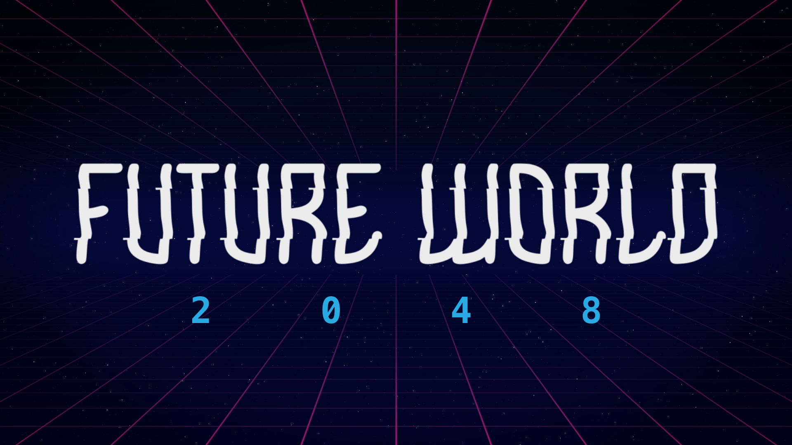

Fictional AI conversation, not a human or a healthcare service. Replies can be wrong. Avoid personal or sensitive information. AI runs in this browser. It downloads 258 MiB of model data plus runtime files from this site. No app is installed; chat messages aren’t sent to a server. Imagined replies are red. Visit resets clear chats.
These are imagined people in 2048. AI replies can be wrong and provide no healthcare or other professional services.
Chats and quiz choices stay in this tab and clear when the visit resets. Keep personal details out of chat.
Use Edge for AI chat. Other browsers offer prepared topics.
In Edge, the browser fetches bundled WASM and model files and runs them in memory. No chatbot app is installed. Other browsers do not start the model. The site has no chat-upload endpoint, analytics, ad trackers, account system, persistent application model cache, or conversation database.
The web host can process technical requests. GitHub Pages logs visitor IP addresses for security. GitHub Pages data collection.
A shared screen link includes navigation and quiz choices, not chats or drafts. Reloading, replaying arrival, or idle reset clears visit state.
Recognized self-harm language pauses fiction and shows prepared support, labeled US crisis contacts, and local-service guidance. The automated check can miss wording. Chat is not monitored by a person and provides no therapy or emergency service. For immediate danger, contact local emergency services. No chat text or crisis-notification statistics are collected.
Icons: Uicons by Flaticon. Browser AI: wllama and Hugging Face SmolLM2. Fonts: Roboto. See the bundled runtime, model, and font notices for their licenses.
The shared assumptions behind this imagined future. Open a topic to explore it.
Explore everyday life in 2048 through the World Truths and the people who live here.
Topic buttons give prepared replies immediately. Your own questions also use prepared content while AI gets ready. Once ready, AI has up to 20 seconds per question, including any queue time. If it takes longer, a relevant prepared reply appears instead. Each reply identifies which kind it is.
Ask naturally about favorites, feelings, daily life, opinions, or what-if situations. Follow-ups are welcome. Characters explore the world through their own perspectives while keeping their ages and backgrounds consistent. Ask for an ethical or civilian analogy if you want to compare ideas. Mathematical theories, formulas, calculations, code, slide decks, songs, and other task deliverables are outside this conversation. Attack planning and terrorist assistance are redirected.
Use Microsoft Edge for AI chat. Other browsers offer prepared topics, with AI chat marked unavailable. Browser Options can open your current screen in Edge or copy a link to paste there. Edge must be installed; your device may ask permission or block the app link. The link preserves the page, selected person, filters, lenses, and quiz choices. Chat messages and drafts stay in the original browser.
If AI startup does not finish within 20 seconds, it stops and prepared replies stay available. CPU mode may be slower than graphics mode. You can retry startup below when available.
A question already with the AI keeps its original 20-second limit when you explore elsewhere. Return to that conversation to find its reply. Reloading the page or starting another visit clears chats.